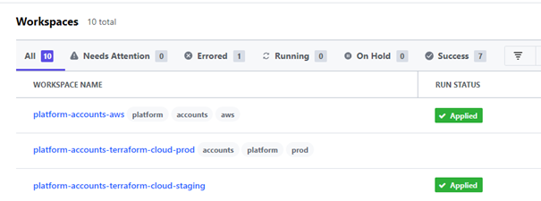

Le premier projet de l'entreprise a été de créer une plateforme de services web. Cette plateforme servira par la suite à créer des items sur la blockchain Tezos et ainsi "tokeniser" des objets de jeu video, c'est a dire, les rendre fongibles.
Afin de rendre disponible la plateforme à l'utilisation, il faut la déployer. Le choix de l'entreprise pour l'hébergement est AWS. Amazon Web Services est une division du groupe américain de commerce électronique Amazon, spécialisée dans les services de cloud computing à la demande pour les entreprises et particuliers.
Pour faciliter le déploiement nous utilisons Terraform. C’est un environnement logiciel d’ « infrastructure as code » publié en open-source par la société HashiCorp. Cet outil permet d'automatiser la construction des ressources d'une infrastructure de centre de données comme un réseau, des machines virtuelles, un groupe de sécurité ou une base de données.
Terraform utilise des fichiers de configuration comme celui-ci :
Je n’ai pas travaillé sur la rédaction de ces fichiers. Mon rôle a été de créer une interface en ligne de commande (CLI) permettant de faciliter le déploiement des ressources sur terraform.
Pour déployer des ressources il faut :
- Créer un workspace
- Initialiser les ressources avec : terraform init
- Construire les ressources avec : terraform apply
- Eventuellement détruire les ressources avec : terraform destroy
Voilà a quoi ressemble une ressource déployée sur l'interface en ligne de Terraform:
Ce processus est fastidieux car il requiert de se déplacer à chaque fois dans le dossier requis pour déployer une ressource et y lancer chaque commande. Le temps de déploiement peut aller jusque 15min et la destruction jusqu’à 5min.
Il est aussi nécessaire pour certaines ressources d’êtres déployées avec des variables d’environnement, et cela devait se faire en passant par l’application web de terraform.
Le CLI permet donc de faciliter l’exécution des commandes tout en passant des variables en paramètre.
La tâche faisait partie de l’Epic Productionize, regroupant toutes les tâches liées à la production :
On peut y voir toutes les tâches et la barre de progression des tâches :
- En vert les tâches terminées
- En bleu les tâches en cours
- En blanc les tâches à faire
Voici quelques tâches qui m’ont été attribuées et que j’ai créé :
Pour la création du CLI j’ai dû utiliser les paquets commander, chalk et node-tfe.
Commander permet de créer une interface en ligne de commande sur Node.js. Et chalk permet de styliser le CLI
On code la commande et l’action qu’elle va faire, et on peut lui attribuer des paramètres.
Avec commander j’ai utilisé node-tfe, un paquet qui permet d’utiliser l’API de Terraform.
Liens des paquets :
Voici quelques exemples de commandes :
Pour construire un workspace :
Pour appliquer des changements a un workspace existant :

En ce qui concerne la rédaction de tests, j’ai plusieurs fois rédigé des tests unitaires complets, et j’ai « refactor » des tests end to end du paquet node-tfe : voici le lien du code node-tfe
Un exemple :
Une des dernières tâches consistait à supprimer les tags d’un workspace avec la destruction de ce dernier. Le problème était que je la fonctionnalité n’était pas présente dans node-tfe. J’ai alors dû l’ajouter.
Voici le commit contenant l’ajout de la fonctionnalité et des tests : commit
Après avoir ajouté la fonctionnalité. Je devais mettre à jour le répertoire principal. Pour cela j’aurais pu simplement demander au propriétaire du package de le mettre à jour. Mais j’ai plutôt mis en place une procédure pour déployer le package sur npm à chaque fois que le répertoire principal est mis à jour.

Node Package Manager est le gestionnaire de paquets par défaut de Node.js. C’est un client en ligne de commande qui permet d’installer tous les paquets nécessaires au bon fonctionnement de son application.
Par exemple si je souhaite utiliser le paquet axios pour coder des requêtes http, je peux l’installer facilement grâce à npm avec la commande :
- npm install axios
Il faut d’abord vérifier que le nom du paquet est le bon. Pour cela je peux aller voir sur le site npmjs.com et rechercher le paquet axios
Je peux ainsi voir quelle commande utiliser pour installer le paquet. Et je suis prêt à l’utiliser.
Dans le cas du paquet node-tfe que je devais mettre à jour, voici sa page npm :
Etant donné que le créateur du paquet ne travaillait plus dessus et que nous avions besoin d’une fonctionnalité en plus. J’ai mis en place, grâce à GitHub Actions, une procédure de déploiement automatique du code à chaque mise à jour.
Actions est un outil créé par GitHub pour le déploiement continu de son application ou paquet par exemple
Voici comment mettre en place le déploiement continue avec GitHub Actions :
1. Créer un répertoire .github/workflows et y créer un fichier de configuration en .yml
2. Dans ce fichier, ecrire la configuration voulue pour le déploiement.:
On peut y voir que le déploiement se fait au moment de la publication d’une release. Une release est une mise à jour du projet, ajoutant des ou une fonctionnalité : mineure, moyenne ou majeure.
Au moment de l’action, ici la release, le serveur de GitHub va installer et lancer les tests du projet, si ces deux étapes passent, alors cela va lancer la publication du projet sur npm avec la commande : npm publish et sur le compte correspondant au token d’authentification enregistré dans les paramètres du projet : secrets.NPM_TOKEN
3. Enregistrer la configuration et mettre à jour le projet sur GitHub
4. Il est possible de voir l’historique des déploiements faits grâce à Actions :
Ici il y a un workflow qui est passé et un autre non.
5. En cliquant sur un workflow on peut y voir les détails :
On retrouve la configuration faite dans le fichier .yml
6. Il est possible de voir les logs de chaque commande mais ici il n’est plus possible de les voir :
Une fois le workflow terminé, on peut voir que la mise à jour a bien été déployée sur npm :
La version GitHub :
La version npm :